Next: Crystal Field Phonon Interaction Up: Including Phonons and Crystal-Field Previous: Including Phonons and Crystal-Field Contents Index
The module phonon allows to consider the phononic degrees of freedom in McPhas. The single ion input file for an oscillating atom (with amplitude up to a maximum displacement 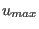, which is relevant for the function Icalc of the module) has to have the following format:
#!MODULE=phonon
#<!--mcphase.sipf-->
#
# phonon
# MODPAR1=mass of atom in units of m0 (atomic mass unit=1.660539e-27 kg)
#
#-----------
MODPAR1=57 # mass in(m0)
MODPAR2=-1.2 # Kxx
MODPAR3=-1.2 # Kyy
MODPAR4=-1.2 # Kzz
MODPAR5=0 # Kxy in (meV)
MODPAR6=0 # Kxz
MODPAR7=0 # Kyz
MODPAR8=1 # umax maximum (cutoff) for displacement [a0=0.5219 A]
MODPAR9=4 # 0 umax restriction in all directions
# 1,2,3 umax restriction in x y z direction only
# 4 umax restriction in x and y direction
# 5 umax restriction in x and z direction
# 6 umax restriction in y and z direction
#-------------------------------------------------------
# Neutron Scattering Length (10^-12 cm) (can be complex)
#-------------------------------------------------------
SCATTERINGLENGTHREAL=0.769
SCATTERINGLENGTHIMAG=0
# ... note: - if an occupancy other than 1.0 is needed, just reduce
# the scattering length linear accordingly
SCATTERINGLENGTHREAL=0.945
SCATTERINGLENGTHIMAG=0
Note, that MODPAR8 and MODPAR9 impose a restriction to the Icalc function of the module phonon. This means, if used with program mcphas the module will not return displacements 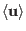 larger than umax. Technically this is done by applying the operation 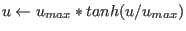 at the end of the function Icalc.
Coordinate System: the Euclidean coordinate system of phonon displacements  with
components 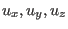 is oriented with respect to the crystal axes
with
components 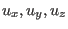 is oriented with respect to the crystal axes
 such that
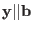,
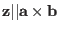 and perpendicular
to and .
such that
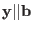,
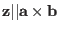 and perpendicular
to and .
The single ion property file contains the matrix
 , the matrix
, the matrix
 decribing the
forces between
different ions
decribing the
forces between
different ions  and 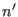 have to be given in the file mcphas.j, which could
look like:
and 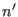 have to be given in the file mcphas.j, which could
look like:
# #<!--mcphase.mcphas.j--> ************************************************************* # Lattice Constants (A) #! a=4.047 b=4.047 c=9.612 alpha= 90 beta= 90 gamma= 90 #! r1a= 1 r2a= 0 r3a= 0.5 #! r1b= 0 r2b= 1 r3b= 0.5 primitive lattice vectors [a][b][c] #! r1c= 0 r2c= 0 r3c= 0.5 # Nonzero Elastic constants in meV per primitive crystal unit cell # in Voigt notation only first index<=second index has to be given # because the constants are symmetric Celij=Celji # Elastic constants refer to the Euclidean coordinate system ijk defined # with respect to abc as j||b, k||(a x b) and i normal to k and j #! Cel11=+129702.248 Cel12=+63972.0533 Cel13=+34346.9127 #! Cel22=+129702.248 Cel23=+34346.9127 #! Cel33=+60842.4597 #! Cel44=+137509.379 #! Cel55=+137509.379 #! Cel66=+256056.495 #! nofatoms=1 nofcomponents=3 number of atoms in primitive unit cell/number of components of each spin #********************************************************************* #! da= 0 [a] db= 0 [b] dc= 0 [c] nofneighbours=2 diagonalexchange=1 sipffilename=phonon.sipf # it follows the Born von Karman model according to springs read from file # the mixing terms Gmix in meV/a0 with a0=0.5292e-10 m #! Gindices= 1,1 1,2 1,3 2,1 2,2 2,3 3,1 3,2 3,3 4,1 4,2 4,3 5,1 5,2 5,3 6,1 6,2 6,3 #! G= +1 13 0 0 0 0 0 0 0 0 0 0 0 0 0 0 0 0 #da[a] db[b] dc[c] Jaa[meV] Jbb[meV] Jcc[meV] Jab[meV] Jba[meV] Jac[meV] Jca[meV] Jbc[meV] Jcb[meV] 0 0 1 1.1 1.1 1.1 0 0 -1 1.1 1.1 1.1 #*********************************************************************
Note that this file may optionally contain elastic constants and mixing term parameters, which are needed for the calculation of magnetoelastic properties (see section 12). It is planned that these files should be created automatically from the output of DFT programs. [to be done]. Currently it is possible to create the input parameters from Born v Karman longitudinal and transversal springs by the program makenn with option -bvk. For an example of phonons in tungsten see examples/tungsten_phonons
If crystal field - phonon coupling is to be input, magnetic ions may be added to mcphas.j. They should not be placed at exactly the same position as the phonon atoms - i.e. da db dc should be chosen (slightly) different to enable the mcphas.j loader to identify which is which.
The coupling between phononic and crystal field degrees of freedom can be derived from
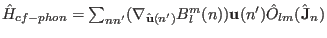.
This can be done
using the program makenn with option -cfph applying small differential changes to
the atomic positions in the unit cell in order to evaluate the gradient of the crystal field
parameters. For examples see several models on crystal field phonon interaction
in examples, for starting a linear chain of Ce ions including a
theory manuscript can be found in examples/Ce3p_chain_cfphonon.
ions including a
theory manuscript can be found in examples/Ce3p_chain_cfphonon.